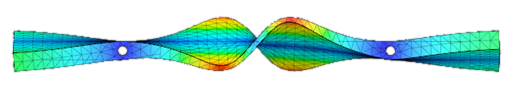

The following audio clip is the resulting sound from the simulation. Without volume attack and decay, this hardly sounds like a vibraphone bar. This is expected.
Warning: turn the volume on your computer down before playing
And the trimmed vibraphone bar:
the following is a spectral comparison of the final generated sound (in orange) and the target sound (purple). By comparing the two spectrums, one is able to observe two classes of error overtones: absent, and extra overtones.
There are two overtones contained in the trimmed vibraphone recording that are weak or nonexistent when compared with the harmonic content of the simulation. The first can be found at 1000 hz. The second can be found around 6000 hz.
| Mode # | Frequency (Hz) | Model Displacement |
|---|---|---|
| 2 | 527.2 | |
| 10 | 6294.0 | |
| 11 | 6304.0 |
The most significant extra overtones shown below can be found around 600, 2500, 5000, and 6500 Hz.
| Mode # | Frequency (Hz) | Model Displacement |
|---|---|---|
| 4 | 2763.0 | |
| 9 | 4843.0 |  |
| 12 | 6769.0 |
Each of these modes has something in common: heavy displacement in the Y direction. As shown in the following image, this displacement causes the bar to warp in such a way that the two holes in the bar are pulled toward one another. This appears to be where the fixed pinned constraints have an effect on the resulting harmonicity.
As shown above, with the exception of the numerous extra overtones, the simulated sound appears to roughly approximate the timbre of the trimmed vibraphone sample. To those who wish to expand upon the experiments in Appendix A, a good place to start exploring would be to find some way to simulate the constraining nature of the vibraphone string. As shown in the extra overtones from Appendix B, pinned constraints appear to be much too rigid to accurately simulate some of the overtones.
Based on the conditions that influence the output of the simulation (See Modal Analysis,) it may be interesting to compare and measure harmonicity differences for different: